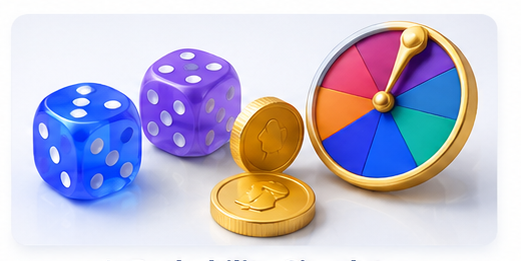
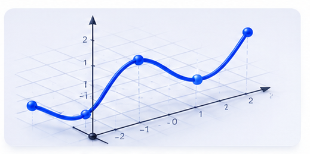
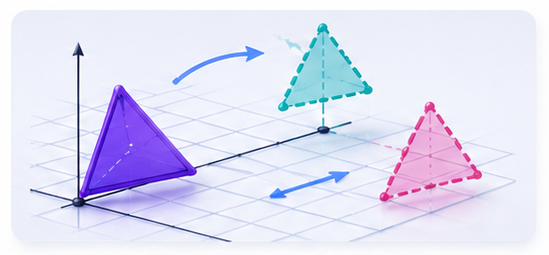
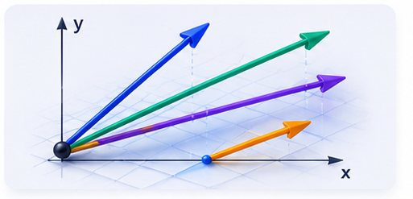
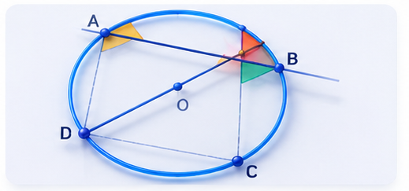
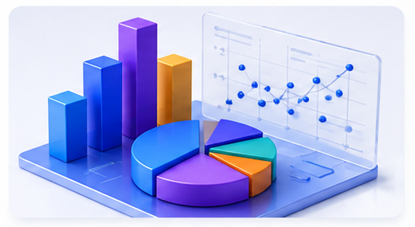
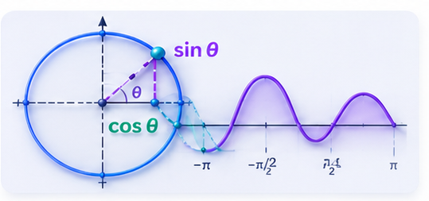
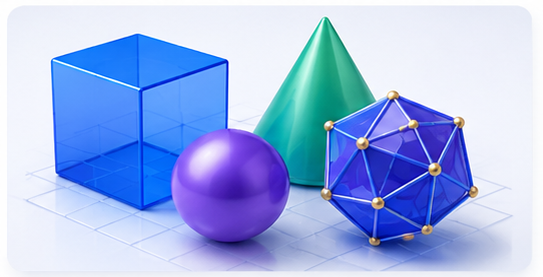
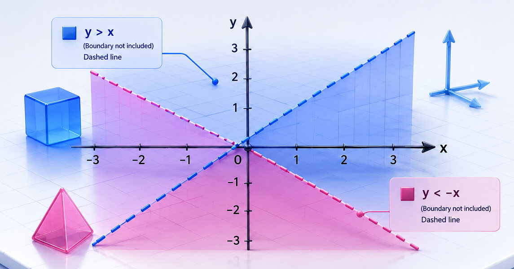

Probability Lab
Run probability experiments with thousands of trials and watch the Law of Large Numbers in action.
- Coin & dice simulation — run up to 1,000 trials at once
- Interactive tree diagrams with live probability calculations
- Venn diagram builder with union, intersection, and P(A|B)

Graph Explorer
Plot any function and explore its key features — gradients, intercepts, zeros, and more.
- Plot multiple functions simultaneously in different colours
- Automatic detection of zeros, y-intercept, and key features
- x-value probe: evaluate any function at any point

Transformation Lab
Apply geometric transformations to shapes and watch coordinates update in real time.
- Translation by vector, with coordinate display
- Reflection in standard lines (y=x, y=-x, x=a, y=b)
- Rotation about any centre, enlargement with negative scale factors

Vectors 2D Lab
Visualise column vectors, addition, subtraction and scalar multiplication on a live grid.
- Adjustable vectors a and b with instant canvas redraw
- Vector addition, subtraction, and scalar multiples k·a
- Magnitude calculation and exam-style quick-check quiz

Circle Theorems Explorer
Drag points around a circle and watch every circle theorem prove itself live, with exact angle measurements.
- 7 theorems including alternate segment and cyclic quadrilateral
- Drag-interactive — works on touch screens too
- Live angle calculations showing the theorem holds for any position

Statistics Lab
Enter your own data or use samples to build histograms, cumulative frequency curves, and box plots.
- Calculate mean, median, mode, range, and IQR from your data
- Histogram with frequency density — not just frequency
- Cumulative frequency with automatic Q1, median, Q3 markers

Trigonometry Unit Circle
Spin the unit circle and watch sin, cos, and tan graphs draw themselves — animated or dragged manually.
- Animated or manual control from 0° to 360°
- Shows exact values at key angles (30°, 45°, 60°, 90°…)
- Simultaneous unit circle + wave graph side by side

3D Geometry Explorer
Calculate volume and surface area of any 3D shape, and see its net unfold — all with your own dimensions.
- 6 shapes: cuboid, cylinder, cone, sphere, pyramid, prism
- Step-by-step formula breakdown with your numbers substituted in
- Net diagram for each shape (where possible)

Linear Inequalities & Regions
Enter inequalities to draw the region R — solid or dotted lines with the unwanted sides shaded — or test a point to check which it satisfies.
- Solid / dotted boundary lines and shaded regions, with R labelled
- Animated step-by-step: draw the line, test a point, shade, reveal R
- Test-a-point mode with a ✓ / ✗ truth table and verdict